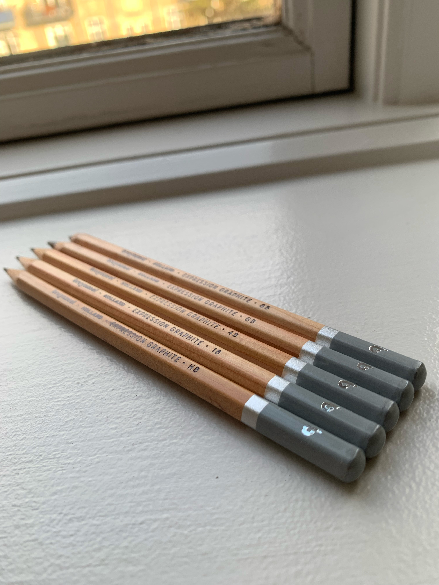
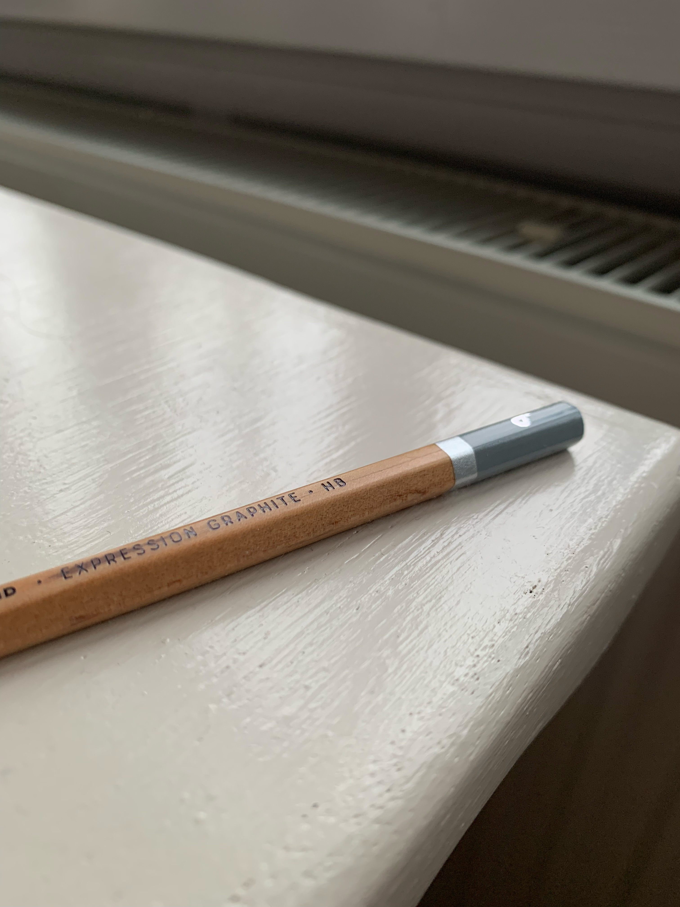

Blyanten
Blyanten er et af de mest grundlæggende
og alsidige tegneredskaber, som enhver kunstner bør kende til.
I denne artikel får du en introduktion til blyantens hårdhedskala
Hårdhedsskalaen:
fra H til B
Blyanter kategoriseres efter en skala, der spænder
fra H (hård) til B (blød), med HB i midten som en
standard blyant. Tallene foran H eller B indikerer,
hvor hård eller blød blyanten er. For eksempel er
2H hårdere end H, mens 6B er blødere end 2B.

H-blyanter er hårde og giver en fin, let streg, der er ideel til detaljer og præcise linjer. Ulempen er, at de kan være svære at viske helt ud, og de kan virke lidt "grå" og mindre levende i tonen.
Tip: Prøv dig frem
Du kan altid eksperimentere med forskellige hårdheder for
at se, hvordan de påvirker dit arbejde, og find den
kombination, der passer bedst til din stil og dine behov.
B-blyanter er hårde og giver en fin, let streg, der er ideel til detaljer og præcise linjer. Ulempen er, at de kan være svære at viske helt ud, og de kan virke lidt "grå" og mindre levende i tonen.

Den gyldne middelvej
HB-blyanten ligger lige i midten og er ofte den blyant, folk starter med. Den giver en balance mellem blødhed og hårdhed, hvilket gør den alsidig.